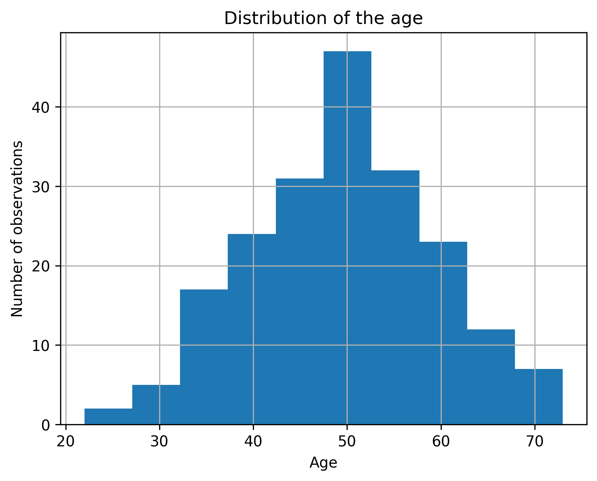
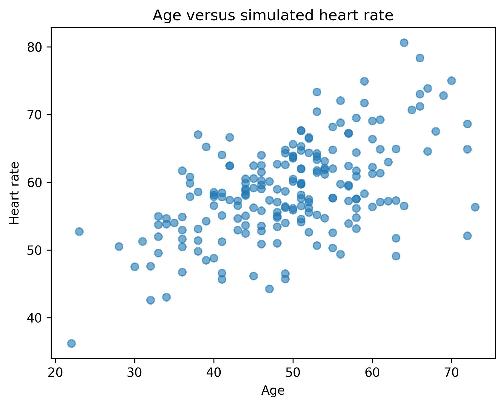
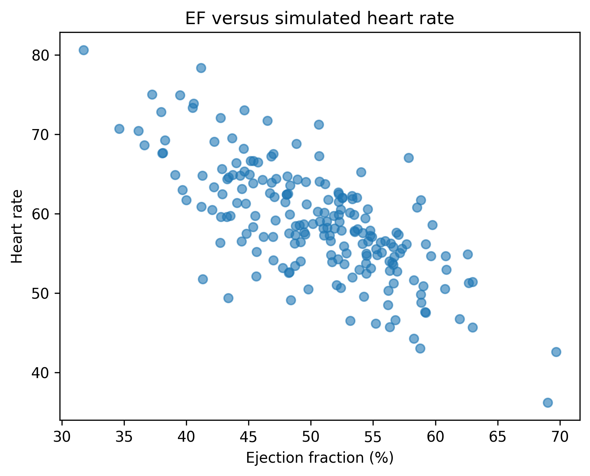
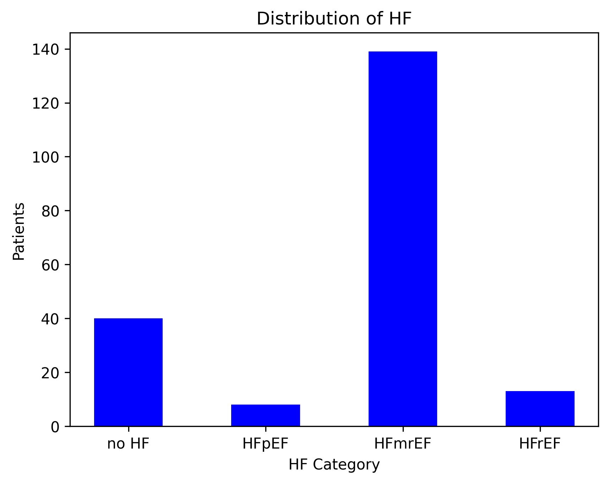
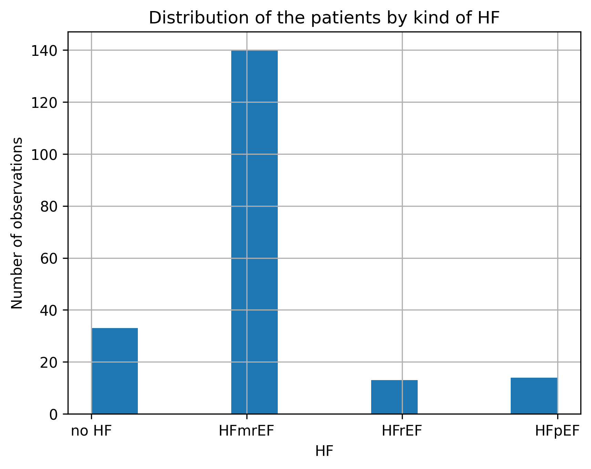
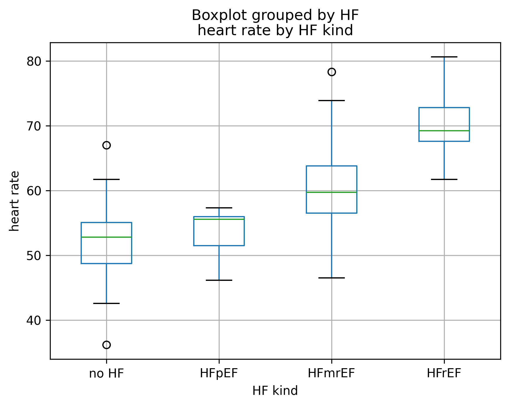
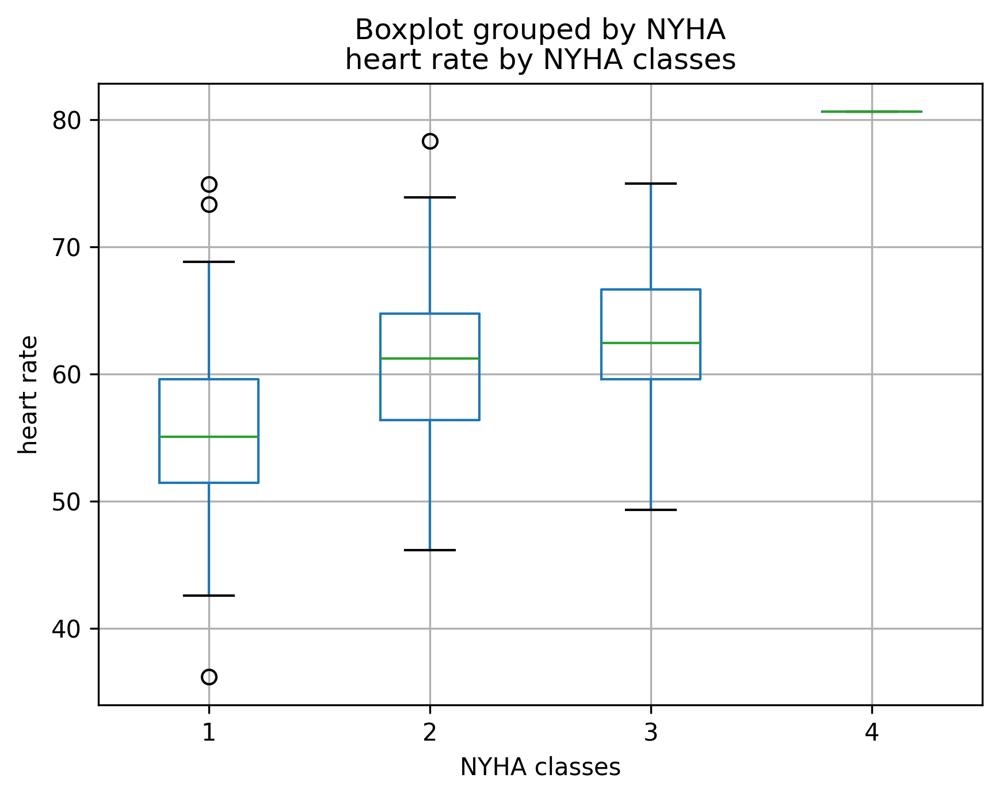
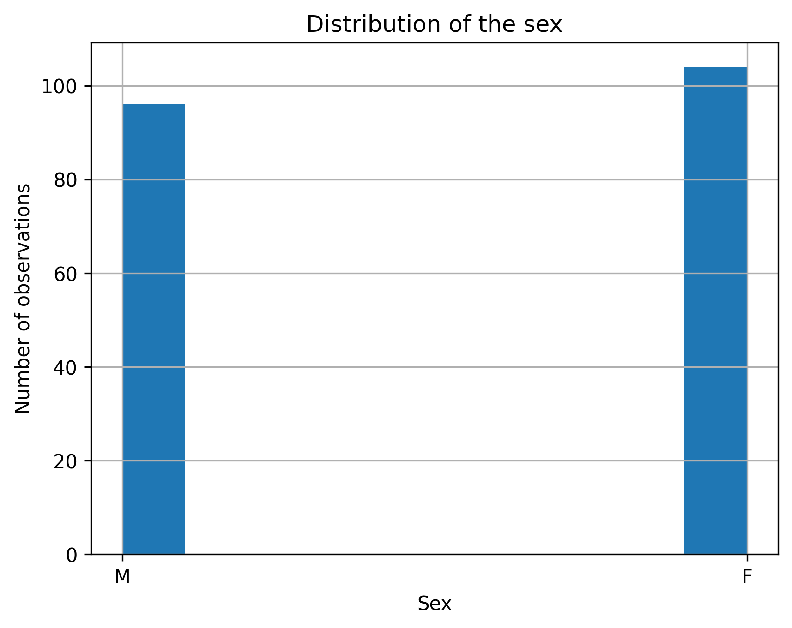

Computational medicine.
Heart Rate Simulation Dataset
This project generates synthetic patient datasets focused on heart rate (HR) and clinical parameters that may influence heart rate, including age, sex, ejection fraction (EF), NYHA functional class, heart failure phenotype, physical activity, and other variables.
The relationships between variables are currently modeled empirically to create realistic educational and research-oriented datasets. The simulator allows users to explore how different clinical factors may affect heart rate distributions and correlations.
Future versions will include adjustable effect sizes, enabling users to modify the strength of associations between variables and investigate different physiological and pathological scenarios.
Potential applications include:
- Learning statistics and data science
- Teaching clinical epidemiology
- Practicing data visualization and machine learning
- Testing statistical methods
- Generating synthetic datasets for hypothesis development
- Exploring potential relationships between heart rate and clinical variables
The project is associated with ongoing research on heart rate variability and cardiac physiology conducted by Oleg Dubrovin at Friedrich Schiller University Jena.







